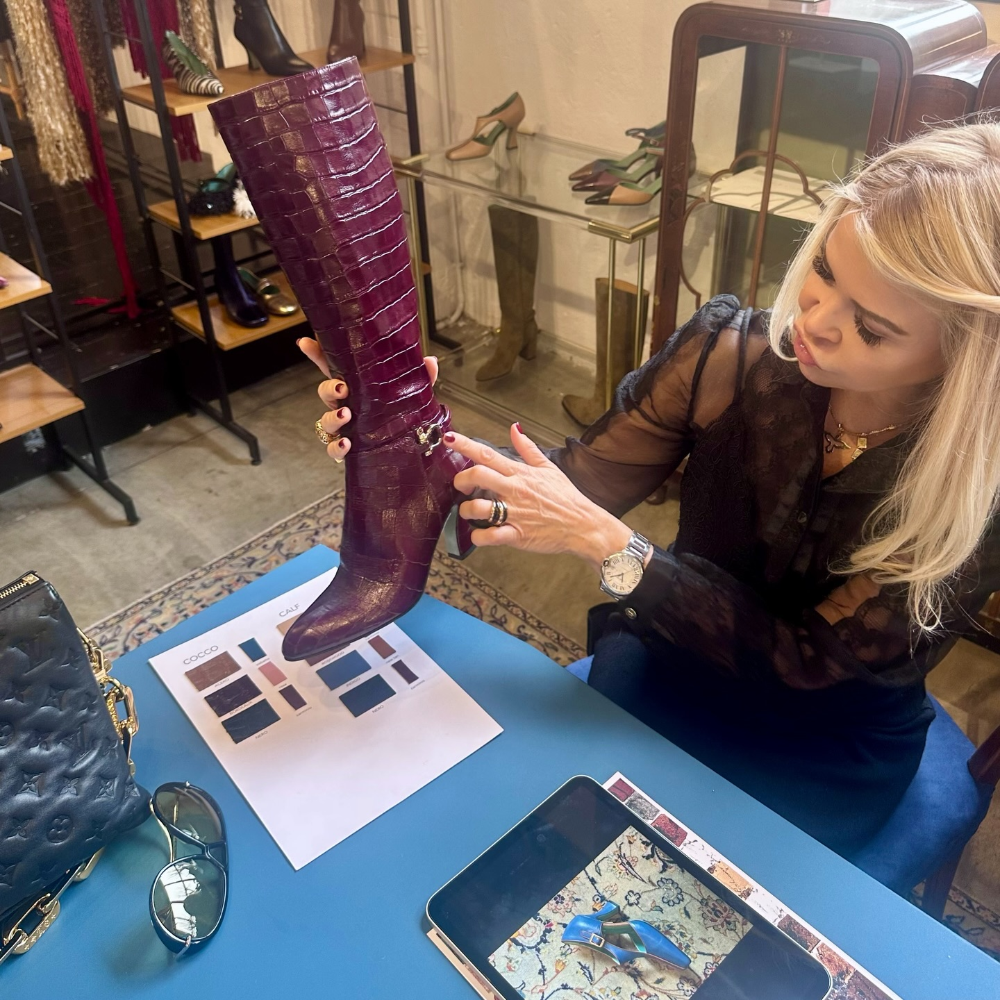
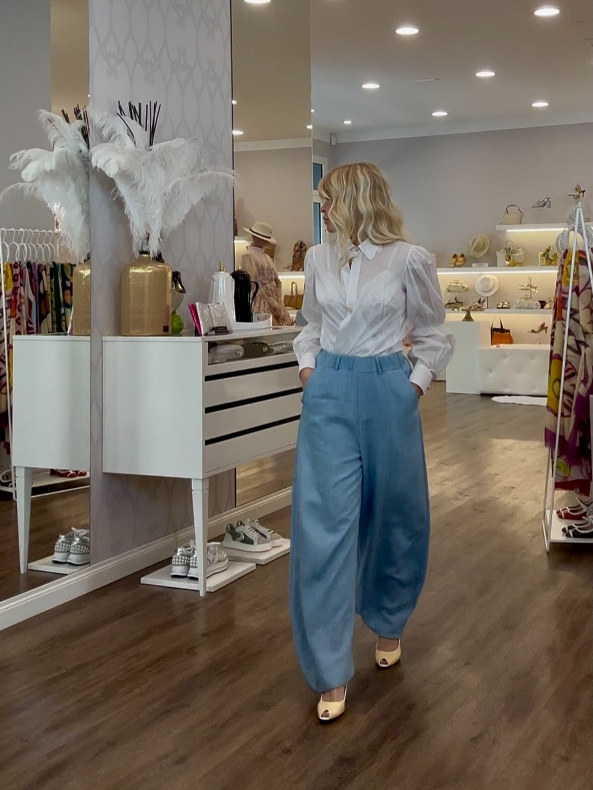

La storia
Keily
L'anima della boutique: il gusto che sceglie, accosta e racconta.
La storia
L'anima della boutique: il gusto che sceglie, accosta e racconta.
Chi c'è dietro
Keily Costa non è un negozio qualsiasi: è il gusto di una donna diventato spazio. Ogni calzatura, ogni borsa, ogni abito passa prima dal suo occhio — e arriva in vetrina solo se la convince davvero.
[Spazio per la biografia di Keily] — qui raccontiamo la sua storia: come è nata la boutique, da quanti anni accompagna le clienti di Prato, la passione per la moda e l'attenzione per i dettagli. Testo da personalizzare insieme a Keily.

Il gusto
Pelli, colori, modelli: Keily seleziona ogni pezzo di persona, campionario alla mano. È questo lavoro — fatto di scelte e di rinunce — a dare alla boutique la sua voce riconoscibile.

Lo stile
Camicia candida, pantalone morbido, la scarpa giusta: il modo di vestire di Keily è il miglior biglietto da visita della boutique. Quello che indossa, in fondo, è quello che propone — con la stessa cura.